Managing multiple checkup packages across organizations.
Led the end-to-end design of an operations platform that enables organizations to manage multiple health checkup packages across complex structures. Defined a tiered framework for package configuration, availability, and organizational visibility — enhancing operational efficiency while enabling scalable business growth.
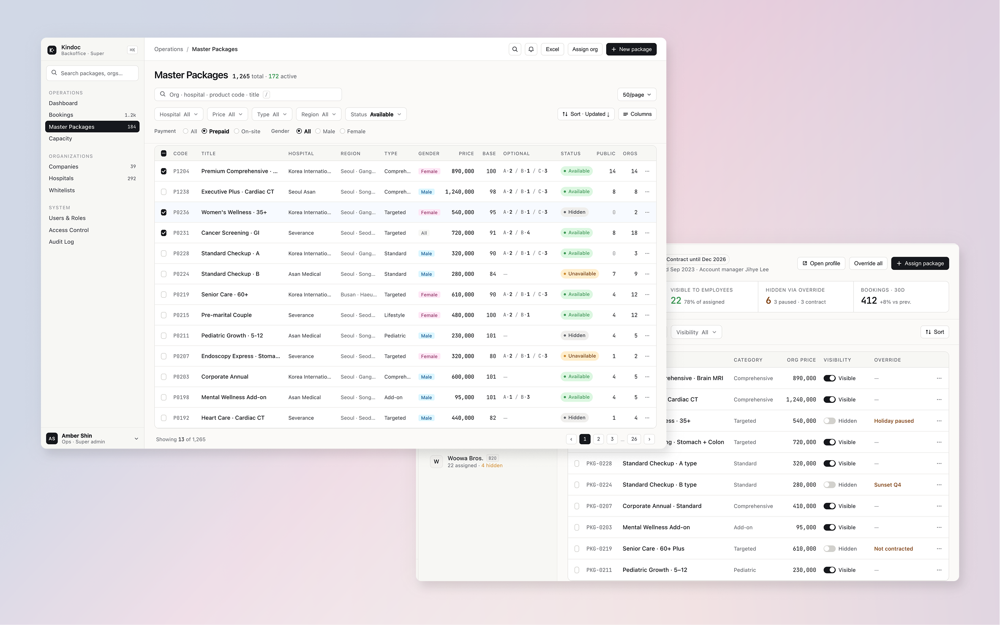
Active Subscriptions
Performance
Mobile / Web Service
Checkup packages are location-based and support both prepaid and postpaid payment models.
Service Expansion
The platform grew from direct consumer bookings to employer-sponsored health programs.
Organizational Scalability
Supported organizations ranging from enterprises to resource-limited startups.
Platform Integrations
Partner services embedded the screening flow, requiring a highly configurable system.
Platform architecture.
This project focused on extending the operational architecture by introducing scalable package configuration across platforms and organizations.
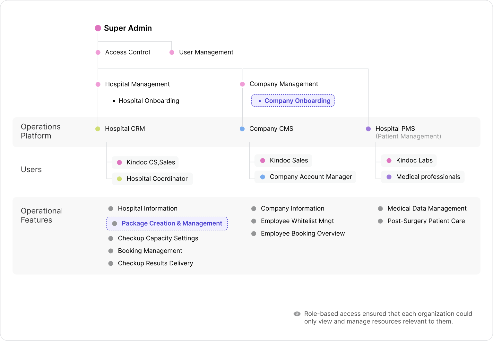
Scaling limitations
in supporting B2B operations.
Problem 01 · Missing Operational Infrastructure for B2B
As the company accelerated plans to launch a B2B booking service, the back-office lacked the foundational infrastructure required to support corporate clients. Core capabilities — such as company management, platform classification, and administrative controls — had not yet been established, making it difficult to operate B2B workflows reliably.
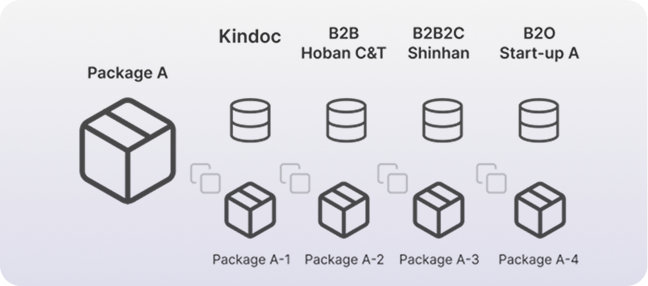
Problem 02 · Fragmented Package Configuration Across Platforms
Product packages were manually configured and managed separately for each platform, creating duplicated setup efforts and increasing operational risk. Even identical health checkup programs were assigned different product codes depending on the platform (e.g., B2B, B2B2C), preventing centralized management and limiting scalability.
→ A single product could not be managed as one entity across platforms.
A back-office that couldn't keep up.
Onboarding small B2O clients meant copying and reconfiguring existing packages each time — inefficient and error-prone, especially at scale.
Checkup centers often wanted to add notes or guidance to specific tests, but there was no way to manage information at the test-item level.
Optional tests showed as ₩0 because they were bundled into the package price, but we needed room for paid add-ons in the future.
Even for the same product, contract changes sometimes required hiding it from a single organization — and the system couldn't support that.
← scroll for more · 04 of 04
A modular approach.
Four layers, four problems.
Each issue lived at a different layer. Rather than building one feature to solve them all, I designed four independent layers — each tied to a specific operational problem.
Package reuse
Connect one master package to multiple organizations instead of duplicating per organization.
Test-item metadata
Manage guidance and notes at the test-item level, not just the package level.
Pricing flexibility
Allow optional tests to be priced beyond ₩0, leaving room for future paid add-ons.
Per-organization visibility
Override product visibility for specific organizations, independent of global availability.
Existing vs unified.
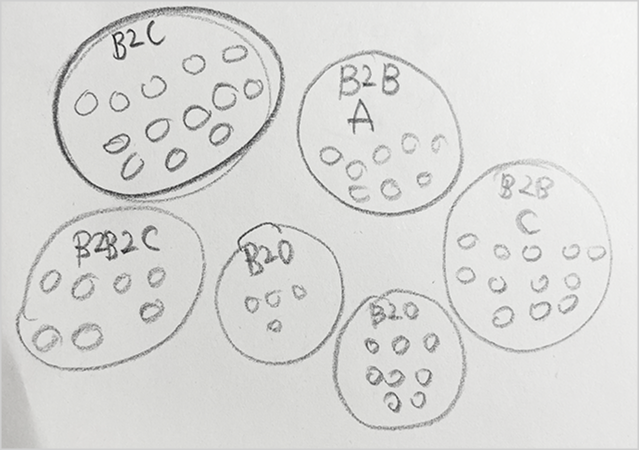
Product packages were configured separately for each platform (e.g., B2B, B2O-A, B2O-B), resulting in duplicated setup efforts and operational inefficiencies.
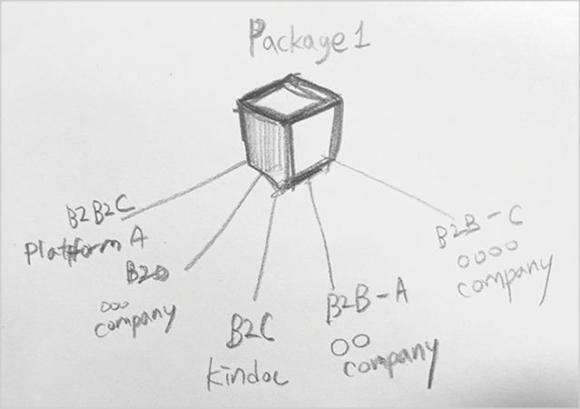
Introduced a unified package model that enables a single product configuration to be distributed across multiple platforms.
From architecture to interface.
Embedding platform type into company creation.
To support multiple operational models, platform type was embedded directly into the company creation flow, enabling organizations to be structured from the point of entry.
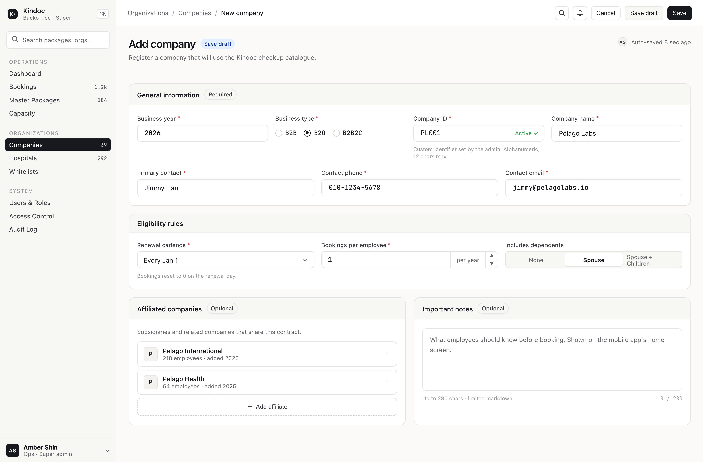
Add Company — platform type (B2B / B2O / B2B2C) is embedded into the general information block alongside renewal cadence and eligibility rules.
Designing a scalable package control system.
A hierarchical structure was designed to separate product availability from organization-level visibility. This approach enabled centralized control while maintaining flexibility for distributing packages across B2C, B2B, and partner platforms.
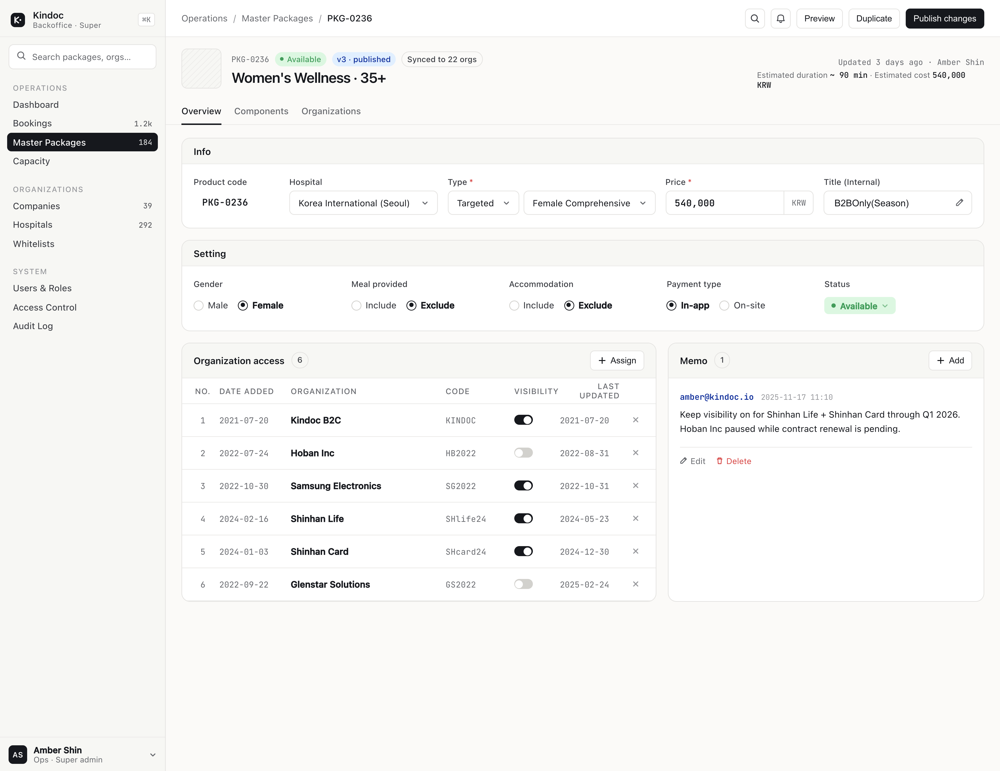
Package detail · Overview — global info & settings on top, organization-level access list and operator memo at the bottom.
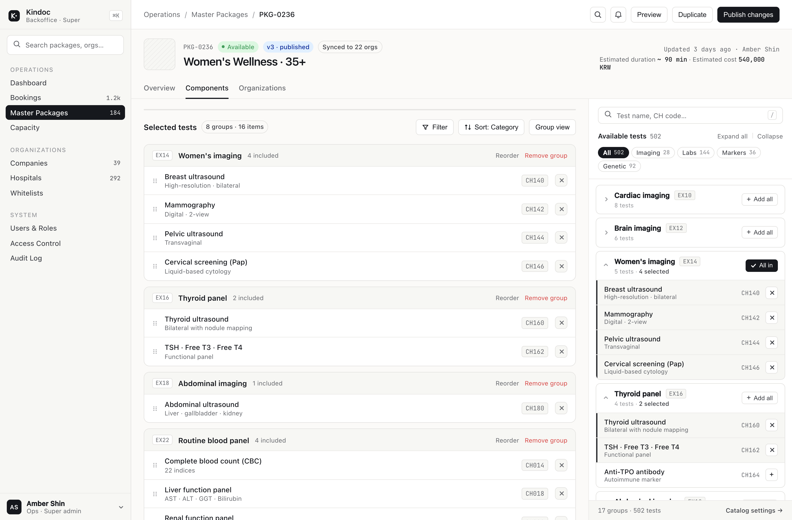
Package detail · Components — selected test groups on the left, available test catalogue with category filters on the right.
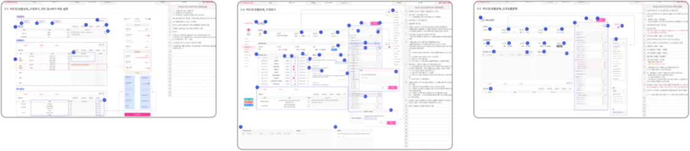


Set global product availability — making products available, unavailable (visible but not purchasable), or hidden across the platform.
Control which organizations can access and display the product.
Temporarily restrict product visibility for specific organizations without changing global or assignment settings.
Separating master control from organizational visibility.
Master package list
In the Master Packages view, operators can create & copy packages, edit package details, assign organizations, manage visibility, and update booking availability — all from a single inventory surface.
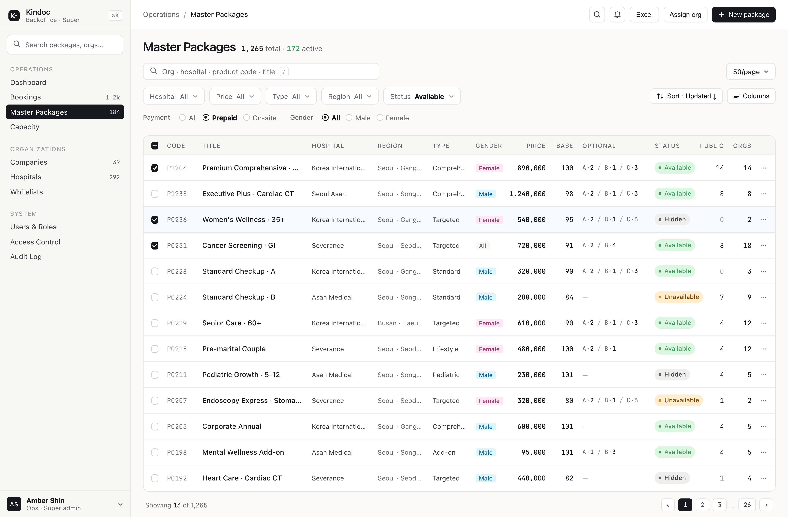
Master Packages list — 1,265 total packages, filtered by hospital / price / type / region / status. Per-row org count, visibility, and quick actions.
Bulk assignment across packages
Package detail pages supported only single-package control, requiring operators to repeatedly add the same organization across multiple products. This was especially common in B2O environments, where a company is typically assigned a predefined set of 20–30 packages. I addressed this by introducing a bulk assignment feature, allowing organizations to be added across packages in one action.

Bulk assignment modal — assign one package to multiple organizations at once.
By Organization — packages assigned to each organization
In the Organization View, admins can monitor and control package visibility directly from the list without navigating into package details. Each row does not represent a unique package — packages assigned to multiple organizations may appear more than once when organizational filters are not applied. This view is essential for verifying which packages are visible to potential checkup users within each organization.
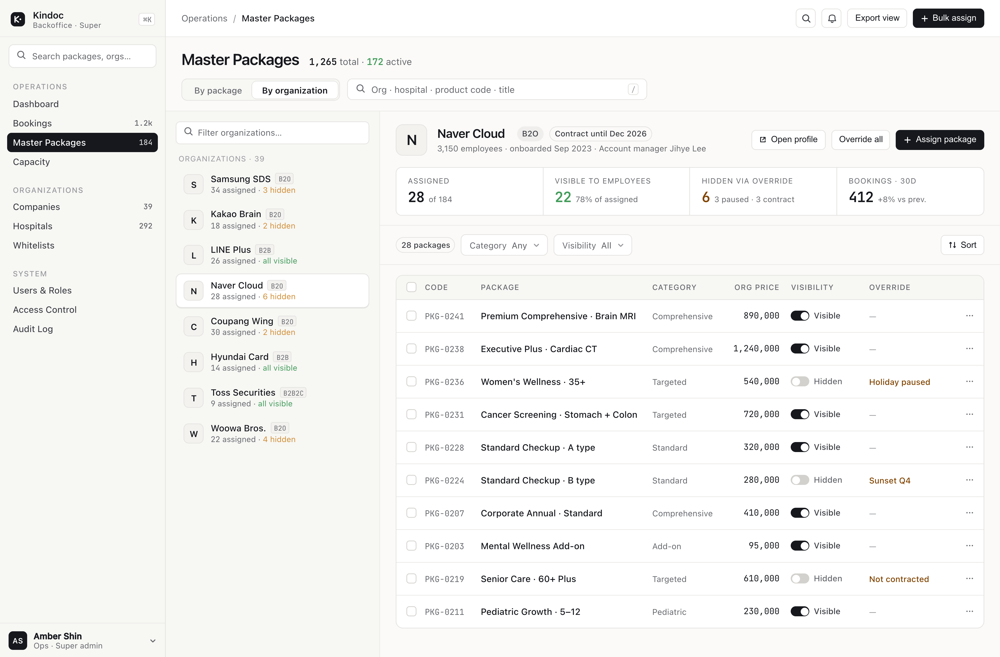
By Organization view — left rail lists every org with assigned/hidden counts; right pane shows that org's packages with visibility toggles and override reasons.
Operational shift & scale.
Same-day client onboarding.
Sales teams remix existing master packages for each new B2B / B2B2C / B2O client — no custom build required.
3–4× faster turnaround on checkup center requests.
When checkup centers requested changes to test items, pricing, or operating conditions, updating one master record propagated across every platform — cutting response time by at least 3–4×.
The unified structure paid off 2 years later.
When per-test booking capacity control was built 2 years later, the unified package structure meant it didn't need to be developed separately for each platform.
B2B grew from 0 to 50% of revenue, with no client loss.
When we launched, B2B revenue was zero. By 2024, B2B made up half of total revenue — and no enterprise client has left since launch.